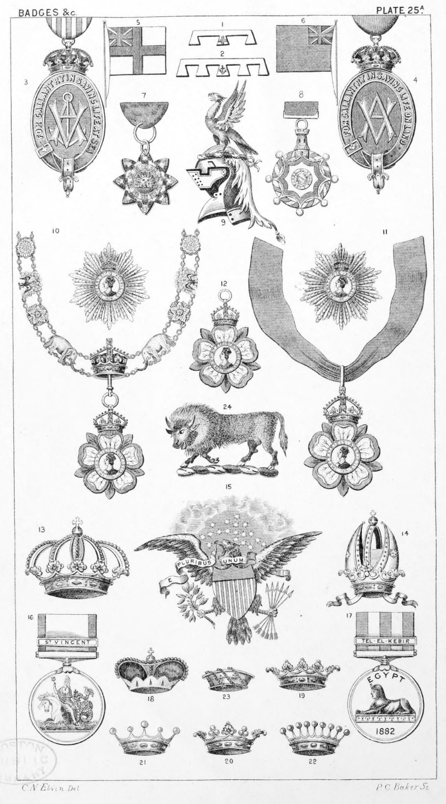

Plate 25a.

Plate 25. A.
- The Label of His Royal Highness
Prince Albert Victor of Wales
- The Label of His Royal Highness
Prince George of Wales
- The Albert Medal for Saving Life
at Sea
- The Albert Medal for Saving Life
on Land
- Ensign of the Royal Navy
- Ensign of the Naval Reserve
- Badge and Riband of the Sun and
Lion of Persia
- Badge and Riband of the Royal
Portuguese Military Order of the
Tower and Sword
- Helmet with Contoise, or Quintise,
with Wreath and Crest an Eagle
with wings elevated and endorsed.
Crest of Maher
The Most Eminent Order of the
Indian Empire
- The Collar, Star, and Badge of The
First Class, or Knights Grand
Commanders
- The Riband and Badge, and Star
of The Second Class, or Knights
Commanders
- The Badge of The Third Class, or
Companions
- Crown of Prussia
- Crown of Austria
- The American Shield and Eagle,
The Badge of the United States
- Naval Medal. Ribbon White with
Blue edges. Medal. Obverse :
The Head of the Queen wearing
a diadem, with the words "Victoria
Regina." Reverse. In waves of
the sea, a sea-horse with Britannia
seated thereon, holding a trident
in her right hand, and an olive
branch in her left. A great num-
ber of clasps were issued with this
medal. Amongst the principal
naval engagements for which this
medal was issued were ; Algiers,
Camperdown, Copenhagen, Na-
varino, Battle of the Nile, St.
Vincent, etc.
- Medal for Egypt. 1882. Ribbon
Blue with two white stripes.
Medal, obverse, Queen's head
with diadem and draped. The
inscription "Victoria Regina et
Imperatrix." Reverse, a sphinx,
the word "Egypt " above and the
date 1882 underneath. Clasps
for Tel-el- Kebir. The same medal
with clasp inscribed "Alexandria,
nth July" was granted to the
Navy. The same medal without
the date 1882 on the reverse, with
clasps for Suakin 1884., El-Teb.,
Tamaai., Nile 1884-5., Abu Klea.,
Kirbekan., Suakin 1885., Tofrek
granted to those in possession of
the Egypt 1882, or Suakin 18S4
medal. This Medal also granted
for services on the Upper Nile in
1885-86.
FRENCH CORONETS.
- Prince
- Due
- Marquis
- Comte
- Viscomte
- Baron
- A Bison. Crest of Fitzjames